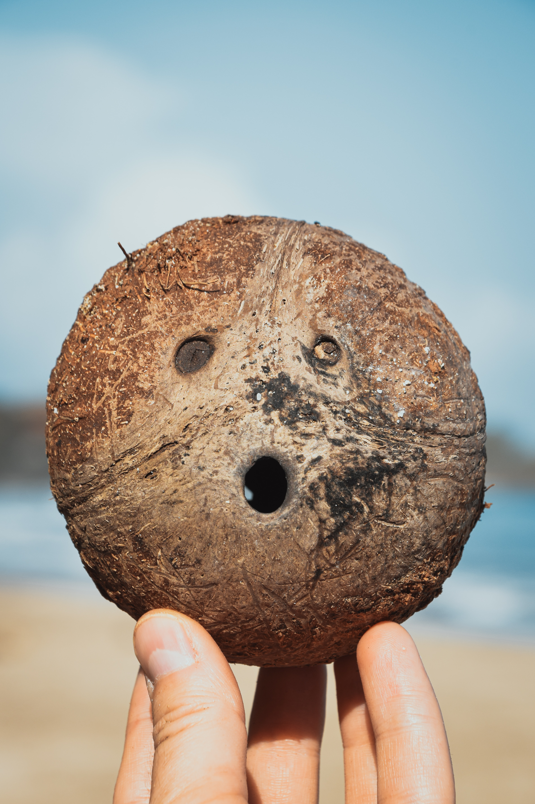

COCONUT & COCONUT-BASED PRODUCTS
Coconut accounts for approximately 12% of all agricultural produce in Sri Lanka with the total land area under cultivation covering 409, 244 hectares (2017) and about 2,500 -3000 million nuts produced per year (by 2017).
New measures have been introduced to enhance the annual coconut crop to 3600 million nuts per year.

COCONUT MILK

COCONUT HUSK
